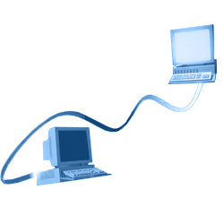

Cableado Estructurado
Ventajas de una red.
Novedades
Ya lanzaron la impresora WIfi, tambien hay un dispositivo que se conecta al televisor el cual se conecta al router wifi, y te permite navegar por la web.
Diseñamos y armados la red de su empresa u hogar. .
Se denomina red de datos a aquellas infraestructuras o redes de comunicación que se ha diseñado específicamente a la transmisión de información mediante el intercambio de datos.
Las redes de datos se diseñan y construyen en arquitecturas que pretenden
servir a sus objetivos de uso. Las redes de datos, generalmente, están
basadas en la conmutación de paquetes y se clasifican de acuerdo a su
tamaño, la distancia que cubre y su arquitectura física.
.
Clases de redes de datos
■Red de Área Local (LAN): Las redes de área local suelen ser una red
limitada la conexión de equipos dentro de un único edificio, oficina
o campus, la mayoría son de propiedad privada.
■Red de Área Metropolitana (MAN): Las redes de área metropolitanas están
diseñadas para la conexión de equipos a lo largo de una ciudad entera.
Una red MAN puede ser una única red que interconecte varias redes de
área local LAN’s resultando en una red mayor. Por ello, una MAN puede
ser propiedad exclusivamente de una misma compañía privada, o puede
ser una red de servicio público que conecte redes públicas y privadas.
■Red de Área Extensa (WAN): Las Redes de área extensa son aquellas que
proporcionen un medio de transmisión a lo largo de grandes extensiones
geográficas (regional, nacional e incluso internacional). Una red WAN
generalmente utiliza redes de servicio público y redes privadas y que
pueden extenderse alrededor del Mundo.

Instalacion de Redes Ethernet
Ethernet es un estándar de redes de computadoras de área local con
acceso al medio por contienda CSMA/CD ("Acceso Múltiple por Detección
de Portadora con Detección de Colisiones"), es una técnica usada
en redes Ethernet para mejorar sus prestaciones. El nombre viene del
concepto físico de ether. Ethernet define las características de cableado
y señalización de nivel físico y los formatos de tramas de datos del
nivel de enlace de datos del modelo OSI.
Instalacion de Redes Wifi
Wi-Fi (pronunciado en español /wɪfɪ/ y en inglés /waɪfaɪ/) es una marca de la Wi-Fi Alliance (anteriormente la WECA: Wireless Ethernet Compatibility Alliance), la organización comercial que adopta, prueba y certifica que los equipos cumplen los estándares 802.11 relacionados a redes inalámbricas de área local.
Costos
Mientras que la inversión inicial requerida para una red inalámbrica puede ser más alta que el costo en hardware de una LAN, la inversión de toda la instalación y el costo durante el ciclo de vida puede ser significativamente inferior. Los beneficios a largo plazo son superiores en ambientes dinámicos que requieren acciones y movimientos frecuentes.